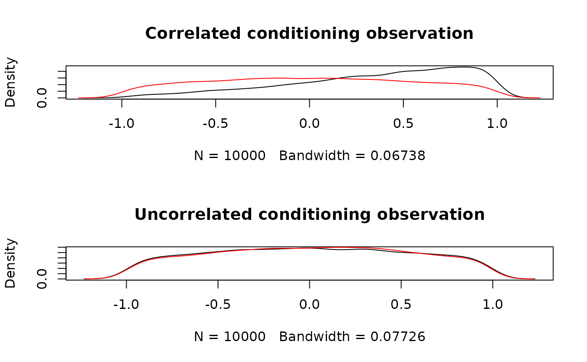

Random Generation from a Truncated Conditional Normal Distribution
rtcmvnorm.RdSamples from the Truncated Conditional Normal Distribution
Author
Jarrod Hadfield j.hadfield@ed.ac.uk
Examples
par(mfrow=c(2,1))
V1<-cbind(c(1,0.5), c(0.5,1))
x1<-rtcmvnorm(10000, c(0,0), V=V1, c(0,2), keep=1, lower=-1, upper=1)
x2<-rtnorm(10000, 0, 1, lower=-1, upper=1)
plot(density(x1), main="Correlated conditioning observation")
lines(density(x2), col="red")
# denisties of conditional (black) and unconditional (red) distribution
# when the two variables are correlated (r=0.5)
V2<-diag(2)
x3<-rtcmvnorm(10000, c(0,0), V=V2, c(0,2), keep=1, lower=-1, upper=1)
x4<-rtnorm(10000, 0, 1, lower=-1, upper=1)
plot(density(x3), main="Uncorrelated conditioning observation")
lines(density(x4), col="red")

# denisties of conditional (black) and unconditional (red) distribution
# when the two variables are uncorrelated (r=0)